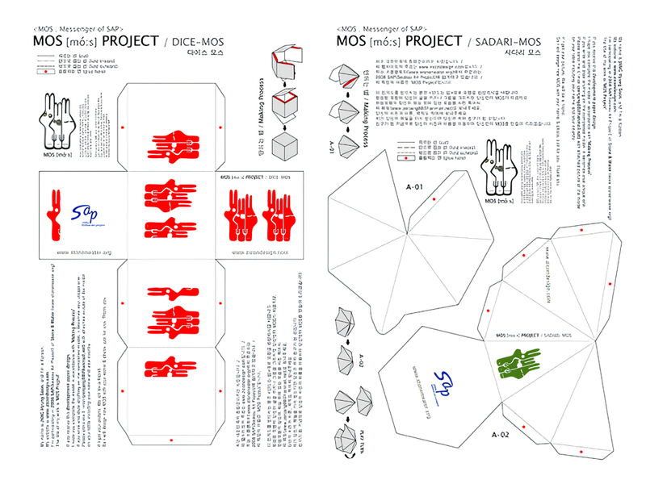
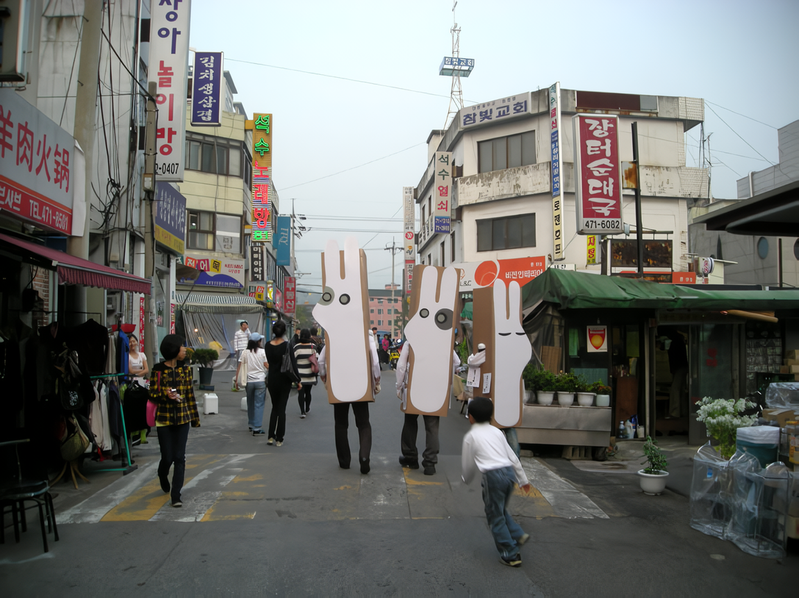
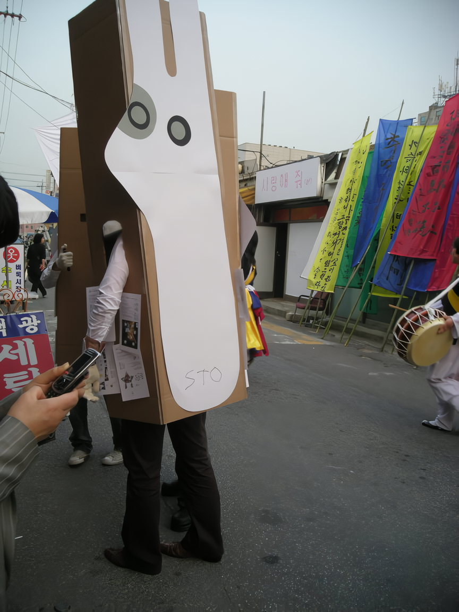

MOS Project : MOS(Messenger of SAP)를 통한 지역과 시간의 경계를 넘어선 소통
MOS(Messenger of SAP)라는 이름을 가진 SAP의 상징을 창조한다.
갖가지 SAP 관련 소식을 수집한다.
간단한 종이모형들을 디자인한다.
종이모형의 전개도에 SAP의 소식, MOS 프로젝트와 관련된 미션을 적는다.
온라인 오프라인을 통해 전개도를 퍼뜨린다.
지역과 시간을 넘어선 미션수행자들의 결과물들을 이메일로 받는다.
SAP의 기간이 끝나도 미션 수행자들은 결과물들을 보낼 것이다.
MOS Project : Communication that overcomes the boundaries of region and time through MOS (Messenger of SAP)
Create a symbol that represents SAP named MOS (Messenger of SAP)
Collect various news about SAP/Design simple paper patterns.
Write down the news about SAP and missions relevant to the MOS project onto a development figure made of the paper patterns.
Spread the development figure around on-and off-line.
Receive e-mails about the completion of the missions from participants.
The participants will constantly send replies even after the SAP ends.
 